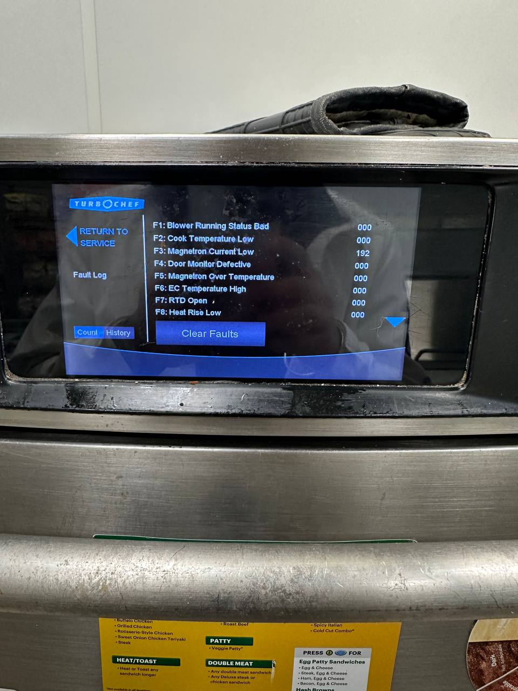

TurboChef F3 Error — Magnetron Current Low (MAG CURR)
An F3 code means the oven has detected low current through its magnetron, the component that generates the microwave energy your speed oven cooks with. Authorized TurboChef Service Provider. Factory-trained technicians, genuine OEM parts. Serving Seattle, Bellevue, Tacoma, and the greater Puget Sound.
Last updated:
What Does the TurboChef F3 Error Mean?
On a TurboChef speed oven, the error code F3 (sometimes shown as “MAG CURR”) means Magnetron Current Low. The oven's control board monitors the current drawn by the magnetron, the high-voltage component that generates the microwave energy for rapid cooking. When that current reads below the expected range, the oven locks out with an F3 fault rather than risk cooking with a failing component.
What that means in practice: your oven's microwave output is reduced or absent. The convection fan and heating elements may still run, but the oven won't cook the way it's supposed to, and the code will typically return even after a power cycle because the underlying condition hasn't been addressed.
F3 is a fault that needs professional diagnosis. The magnetron circuit operates at dangerous high voltage, and the code can share symptoms with other faults (a magnetron problem and a high-limit trip can present similarly), so the correct move is a factory-trained technician with the right test equipment, not a guess-and-replace approach.

Need the full code list? See our TurboChef F1–F10 error code guide to identify any fault before you call. We arrive prepared with the right parts.
Why F3 Needs an On-Site Diagnosis
F3 can trace back to more than one part of the oven's high-voltage system, and the fault code alone doesn't tell you which. Swapping a part based on a guess is how a repair turns into two repairs. That's why every F3 call gets a proper diagnosis with the right test equipment before anything is quoted.
Compact-cavity strain (Bullet / Encore)
On small-cavity models, heat builds faster than on larger units, so magnetron (F3), door-interlock (F4), and high-limit (F8) faults tend to show up sooner. Keep vents clear.
High-use units (NGC / NGO)
NGC and NGO models most often fail on magnetron current faults (F3), airflow restrictions (F5, F6), and door monitor issues (F4), especially in high-volume kitchens.
Related high-voltage circuit checks
Because a magnetron fault and a high-limit trip can share symptoms, we verify the full circuit (high-voltage transformer, capacitor, diode, and wiring) before replacing anything.
Worth knowing: F5 (Magnetron Over-Temperature) is F3's sibling fault, same component, opposite symptom. Where F3 is low current, F5 is an over-temperature reading from the magnetron's thermal protection. Both get the same fix: a genuine OEM part and a full post-repair cook test.
Also worth knowing: on compact-cavity models, F4 (Door Monitor Defective) and F8 (High Limit Tripped) tend to show up alongside F3. All three are heat-related faults on small-cavity units run hard. Call 425-547-0200 for any F3, F4, or F8 fault.
How We Fix a TurboChef F3 Error
Whether F3 shows up during a slow Tuesday morning or right at the start of a dinner rush, the repair follows the same steps:
-
Tell us the code and model
Note the F3 (or MAG CURR) code on the display and your model (Sota, Bullet, Encore, i3, i5, NGC, or another) when you call. That's usually enough for the tech to show up with the right OEM part already in hand.
-
Same-day or scheduled visit
Emergency same-day service is available for a down oven during service hours. Non-urgent F3 repairs can be scheduled, or handled via drop-off for models like Sota and NGO.
-
On-site diagnosis
Our factory-trained technicians confirm the F3 fault, test the magnetron circuit and related components, and quote the repair before starting work.
-
Repair with genuine OEM parts
Most F3 repairs are completed in a single visit, not a return trip after a part ships.
-
Tested before we leave
We run a full cook cycle to confirm the fix holds under real load before we consider the job done.
TurboChef Models and the F3 Fault
F3 can appear across the TurboChef lineup. Here's how it plays out on the platforms we service most:
Bullet / Encore
Magnetron failures (F3) and high-limit trips (F8) are the most common faults on these compact-cavity models. Heat builds fast in the small cavity, so keeping vents clear matters. Door interlock wear (F4) is also common on high-use units.
NGC / NGO
These models most often fail on magnetron current faults (F3), airflow restrictions (F5, F6), and door monitor issues (F4). They have long service lives but need regular preventive maintenance.
Sota (NGO)
Blower motor failures (F1) and RTD probe faults (F7) are most common on the Sota, with control-board communication errors (F10) on older units. Magnetron faults are less frequent here than on the Bullet, but we repair them the same way with OEM parts. Drop-off service available.
i3 / i5
The i3 and i5 more often show F2 (cook temp low), F6 (EC temp high), and F9 (belt wear). If you do see F3 on an i3 or i5, the same OEM-parts repair applies.
HhD, ECO, Fire, Tornado, C3 / C4 / HhC
Legacy and specialty platforms we continue to support with OEM parts and factory-trained diagnosis, including double-batch (HhD) and conveyor (HhC) configurations.
We diagnose F3 on-site and quote before any work starts, so you know exactly what you're paying for. Call 425-547-0200.
Preventative Maintenance That Prevents F3
A surprising share of F3 emergency calls could have been caught early. Here's what's worth staying ahead of:
Air filter & vent checks
Restricted airflow is behind more faults than any single component failure. It's what drives F6-type over-temperature codes on i3/i5 units, and it accelerates heat stress on the magnetron. Clean filters and clear vents are the cheapest insurance against a mid-shift breakdown.
Magnetron and RTD inspection
Temperature readings and magnetron output can degrade gradually before a fault locks the oven out. A scheduled inspection catches the creeping decline early, so the underlying cause can be addressed on your timeline, not the oven's.
Door seal and interlock checks
A worn door seal doesn't just waste energy. It's one of several things that can eventually lead to F4-type door-monitor faults. Checking it on a schedule is faster and cheaper than an emergency call.
TurboChef F3 Error FAQ
What does TurboChef error F3 MAG CURR mean?
F3 MAG CURR means Magnetron Current Low. The oven's control system has detected low current through the magnetron (the component that generates microwave energy) so microwave output is reduced or absent. It requires professional diagnosis and the correct OEM part. Call 425-547-0200.
What causes a TurboChef F3 error?
F3 can stem from more than one part of the oven's high-voltage system, so the code alone doesn't say which. It shows up more often on compact-cavity models like the Bullet and Encore, and on NGC/NGO units in high-volume kitchens. A factory-trained technician diagnoses the actual cause on-site rather than guessing from the code.
Is a TurboChef F3 fault repairable?
Yes. F3 (magnetron current fault) is one of the most common TurboChef faults we repair. The failed component is replaced with a genuine OEM part and the oven is tested before we leave. Call FixIt Expresso at 425-547-0200.
How quickly can you fix a TurboChef F3 error?
Most F3 repairs are completed same-day or within 24-72 hours. We use genuine OEM parts and offer emergency same-day service. Call 425-547-0200.
Which TurboChef models show the F3 error?
F3 can appear across the TurboChef lineup, most often on Bullet/Encore and NGC/NGO models. We repair F3 on all current and legacy TurboChef models: Sota (NGO), Bullet, Encore, HhD Double Batch, i3, i5, NGC, ECO, Fire, and more.
Seeing F3 on Your TurboChef?
Call now or request service online. We respond fast, same-day emergency service available for a down oven.
📞 Call 425-547-0200 Request ServiceTurboChef F3 magnetron repair across the Puget Sound: Seattle • Bellevue • Redmond • Kirkland • Renton • Kent • Tacoma • Everett • Auburn • Federal Way. We're a mobile service based in Renton, our technicians come to your kitchen within roughly 80 miles of Seattle. See TurboChef repair across the Puget Sound for the full picture.